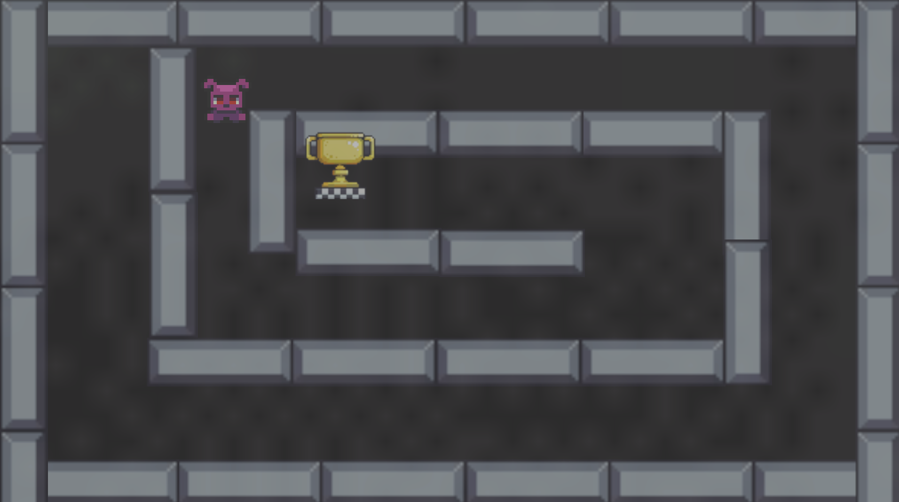
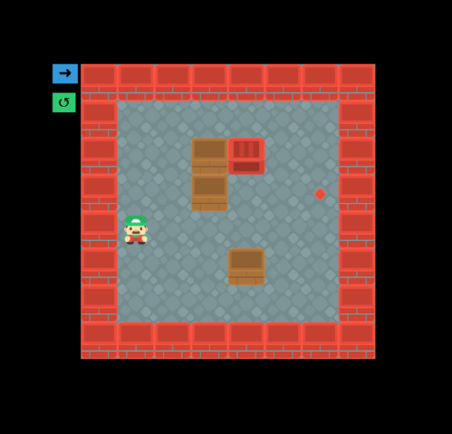
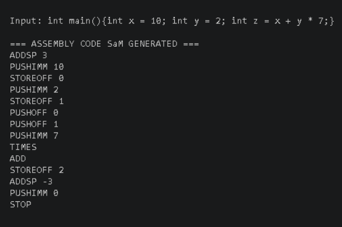
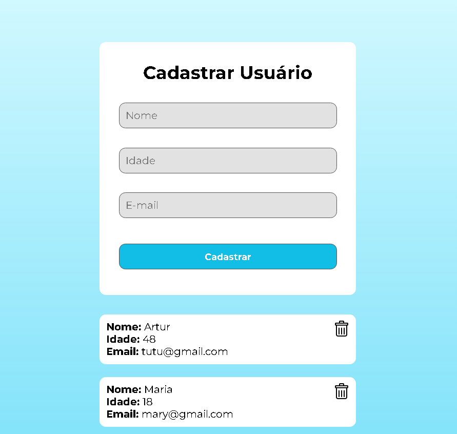
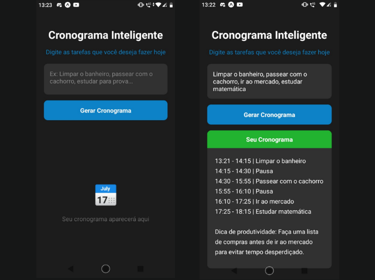

Jogo de labirinto 2D.

Jogo 2D Sokoban com elementos educacionais.
Chatbot para agendamento de consultas médicas no Telegram.

Compilador da linguagem C para a Máquina Virtual SaM.

API de cadastro de usuários.

App mobile com IA que cria cronogramas diários personalizados a partir das tarefas do usuário.
Sou estudante de Ciência da Computação no IFB, atualmente estou no oitavo semestre. Sempre gostei de tecnologia e jogos, o que me motivou a seguir essa área e explorar a programação. Durante a graduação, desenvolvi conhecimentos em lógica de programação e em linguagens como C, C#, Java, JavaScript e Python. Também tive meu primeiro contato com desenvolvimento de jogos na disciplina de Computação Gráfica, onde utilizei a Unity para criar um jogo 2D. Atualmente, estou explorando diferentes áreas da computação e buscando aprender novas tecnologias, com interesse especial em me aprofundar no desenvolvimento de jogos.